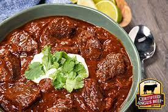

Texas red cowboy chilli

This deliciously meaty dish features three authentic mexican
chilli's toasted and steeped in water to rehydrate them before
blending into a lucious red chilli paste.
Ingredients
- 2 Large onions, diced
- 3 Ancho dried chillis
- 8 Arbole dried chillis
- 3 Pasilla dried chillis
- 2 Gaujillo dried chillis
- 2 KG chuck steak
- 3 Teaspoons vegetable oil
- Half cup of chilli powder
- 3 Tablespoons of cumin powder
- 1 Tablespoon of dried oregano
- 6 Cloves of garlic, peeled and minced
- 1 Tin of chopped tomatos
- 2 Beef stock cubes or 600ML of homemade stock
- 2 Limes
Method
- Lightly toast your dried chillis in a pan, this wont take long
before submerging under boiled water from the kettle for 30 mins
- Cut the chuck steak into 2 inch thick cubes and season with salt before adding to a pan with a small amount of vegetable oil to brown the meat.
- Finely dice the onion and garlic and add the onion to the pan once the meat is browned and removed from the pan. Add the garlic once the onions have turned translucent and soft.
- Using a food processor or blender remove the rehydrated chillis and blend them into a puree then add the puree and meat back to the pan with the onions and garlic.
- Add the chopped tomatoes along with a half cup of chilli powder, cumin powder and dried oregano.
- Add the stock and bring the pot to the boil before covering and reducing the heat down to simmer for 2 hours.
- Add salt and black pepper to taste when serving, finish with juice of limes.